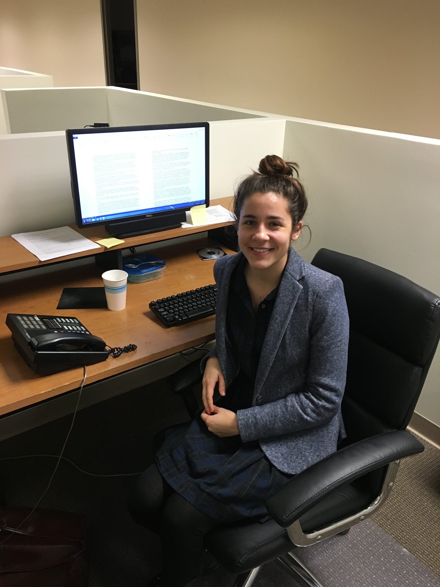

I currently live in Ft. Greene, Brooklyn with three King's alum and work at Success Academy Charter Schools. Success Academy is a network of 32 charter schools in the city fighting for education reform and equal opportunity for all New York City kids. I am an associate teacher in a kindergarten classroom at SA Union Square and am training to be a lead teacher next year.
I did not know I would be teaching when I graduated from King's, and I don't know if I will make a career of it. But I knew I wanted to work with and for people. I have a passion for the education movement because I think nothing sets us up for success in life as much as a strong education.
My piece of advice for the members is of QE1 is to have a GROWTH MINDSET about yourself! You're in the city of opportunity--don't be afraid to try new things, whether it's in the form of a club at King's, a part-time job, volunteer work, a hobby, or a super impressive internship. You might not know what you're good at yet or what kind of work lights a fire under you. You'll be a better person for trying and you will have a really good idea of what you want to keep doing when you graduate.
 Celina Durgin '15
Celina is living in the city and currently working as an Editorial Fellow at the National Review Magazine, the oldest conservative publication in America. She pitches new story ideas every morning, edits online articles, and assists journalists. Celina speaks highly of her coworkers and the careful thought that goes into everything they do. Along with the National Review, she is also working part-time at First Things, a journal aiming to advance a religiously informed public philosophy.
For anyone considering going into Journalism, she suggests that you write for the school newspaper and get involved in Conservative Christian groups that can give you compensation for internships. Find a way to get to know people in your field. She never really liked the idea of networking until she found something she really loved doing, and then it turned out to be something natural and easy.
Celina has two pieces of advice to give us undergraduates here at King's. First, realize that every story is different. Your route will look different than someone else's. God teaches us through our own experiences. Don't try to model your life too much after others, but listen to their advice. Second, you will be tempted to feel like you're at the top as you get older and become a senior. You're about to get your degree. You're about to head out into the labor force. But don't think of it as a capstone. A degree is only a basic foundation. In just a moment, you are going to be at the bottom again. You are going to be the one who has no experience. So, be humble. Don't take yourself too seriously, and make sure to listen to those who have been doing what you're doing for a long time before you. Be grounded in your fundamental values, but be open to new ways of thinking and do not be afraid to change. Also, do not be depressed about having a menial job. Your journey has just begun!
Grace Santulli '15
Grace is happily married to Brandon Santulli and living in the Upper East Side and absolutely loving it! Grace is going to be our Alumnae Representative, getting in touch with and communicating with our graduated Queens when needed.
Grace is currently the Promotions Manager at Salem Media of New York, a Conservative Christian radio talk station. As her position is relatively new, Grace ends up getting involved in a lot of different projects. As the Promotions Manager, she goes to different concerts and events to promote the station, runs social media, maintains their web presence, and plans events, such as Pastor Appreciation Month.
Grace's advice to current Queens is to take advantage of your flexible schedule. Free afternoons between classes is an opportunity you will never have again once you join the workforce. Take advantage of the city during your spare time, because soon you will only have evenings to enjoy it.